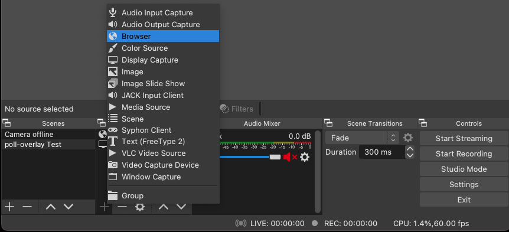
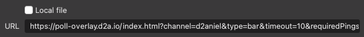
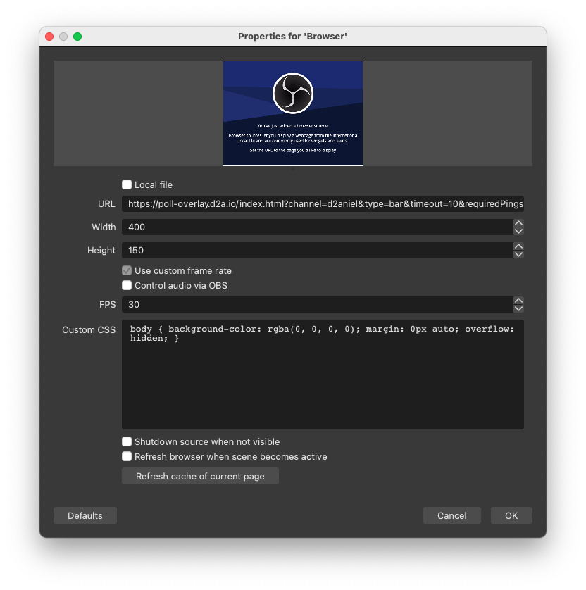
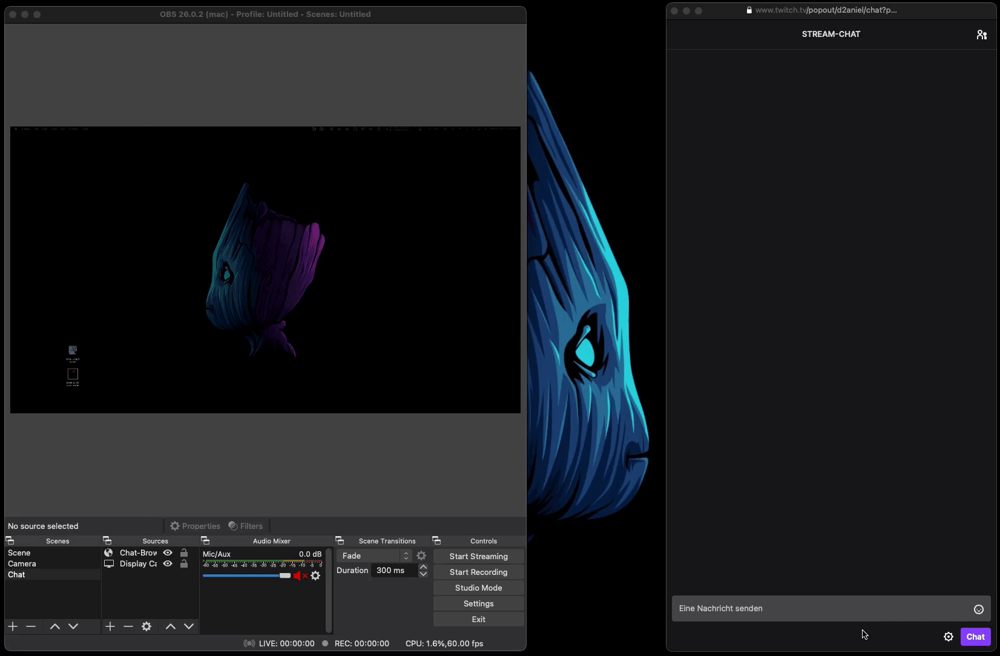
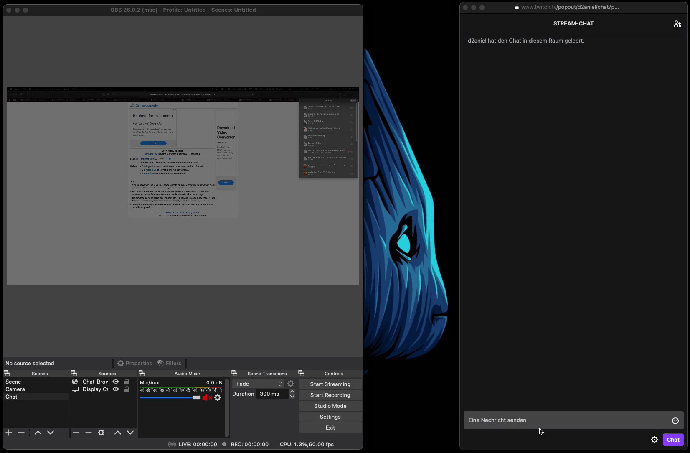

This is a small project to evaluate those "1" and "0" polls in Twitch streams, and display them live in the stream.
The overlay can be used without further registration or installation.
The overlay is currently hosted on GitHub Pages.
So the base URL currently is: https://darmiel.github.io/twitch-poll-overlay/.
The channel has to be specified as the parameter: ?channel=<your channel name>:
-> http://darmiel.github.io/twitch-poll-overlay/index.html?channel=\<your channel here\>
There are a few more optional parameters.
The easiest way is to use the
Parameter-Builder for twitch-poll-overlay
In the following I will show the setup using OBS, but this should be possible with any other streaming program.

URL
⚠️ Note: Please make sure that only here the size is adjusted.
If you resize the browser source afterwards with your mouse, problems will occur.
body {
background-color: rgba(0, 0, 0, 0);
margin: 0px auto;
overflow: hidden;
}
Your Browser source should look something like this:



/**
* @required
* On this channel the chat is monitored for reactions
*/
channel: string;
/**
* The type of the chart
* This can be either "bar" or "pie"
*/
type: ChartType;
/**
* The overlay will be shown if more than {Required Pings} reactions were detected in
* {Timeout} seconds
* The overlay will be hidden if less than {Required Pings} reactions were detected in
* {Timeout} seconds
*/
timeout?: number;
requiredPings?: number;
// +----------------------+
// | F O N T |
// +----------------------+
/**
*
* The font size of the font that serves as a percentage display above the chart.
* Use FONT_DYNAMIC to have the font size calculated according to the total size of the chart (dynamic)
* @default 25
*/
fontSize?: number;
/**
* The font family for the values
* @default calibri
*/
fontFamily?: string;
/**
* How much the text color should be darkened
* @default .65
*/
fontColorFactor?: number;
/**
* The font in the calculation by the factor {fontSizeFactor}
* @default 1/8
*/
fontSizeFactor?: number;
// +---------------------+
// | C H A R T |
// +---------------------+
elementId?: string;
x?: number;
y?: number;
width?: number;
height?: number;
background?: string;
// +---------------------+
// | B A R |
// +---------------------+
/**
* The distance of the height (bottom and top) to the edge of the canvas
* @default 0
*/
barMarginHeight?: number;
/**
* The distance of the width (left and right) to the edge of the canvas
* @default 0
*/
barMarginWidth?: number;
/**
* The top and bottom distance between
* the outline of the ProgressBar and the filled in
* @default 5
*/
strokeMarginHeight?: number;
/**
* The left and right distance between
* the outline of the ProgressBar and the filled in
* @default 5
*/
strokeMarginWidth?: number;
/**
* The colors from this array are gradually used for the colors of the values of the bar.
* If there are less colors in the array than values,
* the next color is taken from the beginning again.
* @default {../color.ts::colors}
*/
valueColors?: string[];
/**
* This color is used for the border of the bar.
* @default #34495e (light gray)
*/
strokeColor?: string;
/**
* How often should the contour be drawn? (Or also: the thickness of the stroke)
*/
strokeIterations?: number;
/**
* Round the value?
*/
textRound?: boolean;
// +---------------------+
// | P I E |
// +---------------------+
/**
* Round the value?
*/
round?: boolean;
/**
* (height or width) / {radiusFactor}
*/
radiusFactor?: number;
I don't now.. I had this idea for a while now, and I just wanted to extend my TypeScript knowledge and experiment a bit with Webpack. Besides, it might be a little help for one or the other streamer / viewer 😁.